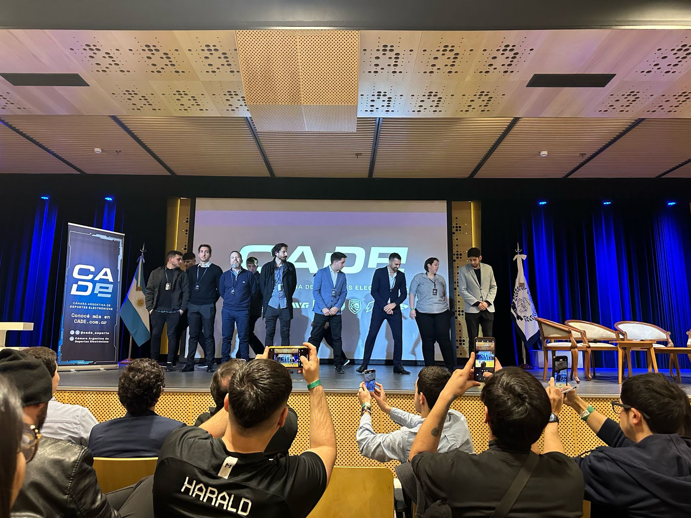

Trayectoria en Esports.
Te dejo acceso a las siguientes paginas webs que fueron de mi agrado durante el año pasado:
|
|
|
 |
Una breve explicacion de porque seleccione esta pagina web para que forme parte de mi "identikit", es porque, durante lo que fue el año 2024 tuve paso como Community Manager en un equipo de esports, "Primate", el cual fue protagonista del tier 2 del competitivo del juego "League of Legends" |
Por otra parte, en esta plataforma llamada Esportunity podemos visualizar lo que seria mi "perfil" dentro del ecosistema de los esports. |
Como pudimos ver en la primer foto del Identikit, fui parte de la presentacion de la Camara Argentina de Esports (CADE) que se organizo en UADE, fui invitado como representante de Primate junto a un compañero. |